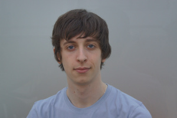
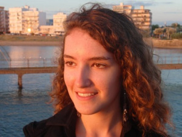

Stéphane

Bonjour, Je m'appelle Stéphane ARCHER et je suis en SPE à EPITA. L'informatique a toujours été ma passion et particulièrement l'univers des jeux vidéo. J'attends essentiellement de ce semestre de pouvoir perfectionner ma programmation, d'apprendre à structurer un projet, de savoir répartir les tâches et de vérifier que tous s'imbrique.
Mélanie

Bonjour à tous! Mon nom est Mélanie EYCHENNE, je suis étudiante en deuxième année de prépa à EPITA (école d'ingénieurs en informatique). Je suis en Angleterre pour 3 mois pour les études. Je ne suis pas très forte en anglais, j'espère donc que ce voyage va me permettre d'améliorer mon anglais. Je souhaite également que ce semestre à l'étranger me permettra d'améliorer mes compétences en programmation (plus particulièrement en C et en C#).